这份手册写给使用者，不要求你懂 aplayer 的 HTTP 接口或前端构建。它按“安装 → 怎么用 → 怎么确认正在播放 → 出问题先看哪里”的顺序组织。更深入的接口、构建和部署细节见 docs/04-程序接口文档.md 与 docs/03-开发手册.md。
使用前请阅读 APUI 用户协议与免责声明。APUI 只是控制界面：音量、DSD/DoP、声卡和功放状态仍由 aplayer 与你的音频设备决定。首次试听、切换格式或声卡时，请先把下游音量调到最低。
APUI（Album Player UI）是 Album Player for Linux 2.19 的一套独立 Web 操作界面。它是一组静态文件，安装时替换 /opt/aplayer/aplayer.html 并在 /opt/aplayer/ui/ 下放置 JS/CSS；之后仍由 aplayer 自己在 7778 端口提供页面。APUI 不新增系统服务、不新增端口、不改音频引擎，也不包含 aplayer 二进制。
它和厂商自带 UI 是“同一台播放器的两套遥控器”：两者都通过 aplayer 的本地 HTTP 接口读取曲库、发送播放命令、读写配置。切换 UI 不需要换播放器；卸载 APUI 就恢复厂商页面。
| APUI 负责 | aplayer 负责 |
|---|---|
| 曲库浏览、封面、专辑/艺术家/曲目页面、搜索 | 扫描媒体库、读取标签、封面与文件 |
| 播放/暂停/停止/上一首/下一首、进度、队列查看 | 解码、缓冲、Gapless、DSD/DoP、ALSA/Diretta 输出 |
| 网络电台分类、播放、收藏、添加/删除入口 | 电台目录、流连接、第三方图片/元数据 |
| 播放列表的保存、载入、删除界面 | 播放列表文件（aplayer.dat/.ap2）的实际读写 |
| 设置表单、配置导入/导出、状态展示 | 配置项的最终解释、声卡/DSD/音量行为 |
| 桌面/手机响应式布局、主题、全屏正在播放 | 音频时钟、设备能力和播放结果 |
第一，APUI 没有登录。它和 aplayer 的接口一样，默认只适合可信局域网。不要把 7778 端口直接暴露到公网；远程访问请自行加 VPN、反向代理认证或防火墙。
第二，设置保存是“整包覆盖”。APUI 会把完整可写配置合并后提交；只改一个分页也会提交全部分页的当前值。改设置前请备份 config.dat，不要提交空白或来源不明的配置。
第三，APUI 不是官方组件。Album Player、TinyLMS 及其商标属于各自权利人。APUI 只提供前端，不改变 aplayer 的许可，也不代表厂商背书。
| 不做 | 原因 / 你该去哪里 |
|---|---|
| 解码、升频、EQ、房间校正 | 由 aplayer 与 DSP 设置负责；APUI 只改配置，不处理音频 |
| 编辑歌曲标签、移动/删除音乐文件 | aplayer 没有这些接口；请在文件系统或标签工具中处理 |
| 队列重排、拖动排序 | aplayer 没有队列编辑接口；APUI 提供只读查看与保存 |
| 多房间、多设备同步 | 不在本期范围；只控制当前 aplayer 实例 |
| UPnP 渲染器（7779） | 属于 ap2renderer，APUI 不修改它 |
| 用户账号、权限与审计 | 沿用 aplayer 的无鉴权本地接口 |
APUI 1.0.0 的发布包是静态前端，不依赖 Node、Python 或额外的 Web 服务器。安装脚本会把入口文件热替换进现有 aplayer 目录，不需要重启 aplayer。
/opt/aplayer。apui-web-1.0.0.tar.gz 及其 .sha256。# 在目标机先确认 aplayer Web 服务本身正常 curl -fsS http://127.0.0.1:7778/ | head # 如果这一步失败，先不要安装 APUI；先让 aplayer 跑起来 systemctl status aplayer # 或 OpenRC / GentooPlayer： # rc-service aplayer status
建议整个解包、进入目录、执行安装的过程都在同一个 root 会话里完成，避免文件属主和权限不一致。
sudo -i cd /tmp tar -xzf apui-web-1.0.0.tar.gz cd apui-web-1.0.0 ./install.sh /opt/aplayer
安装脚本会：
aplayer.html、aplayer.js、aplayer.css、config.dat 和 ui/ 备份到 /opt/aplayer-ui-backup-<时间戳>/；ui/app-*.js、ui/app-*.css 放入 /opt/aplayer/ui/；/opt/aplayer/aplayer.html；安装后先核对入口。浏览器打开 http://<播放器IP>:7778/，侧栏底部应显示 UI 1.0.0 · aplayer 2.19。如果仍显示旧版本，先强制刷新（Ctrl+F5 / Cmd+Shift+R），再检查 /opt/aplayer/aplayer.html 是否指向新的 ui/app-*.js。
opt/aplayer/music 或 mnt/samba。APUI 1.0.0 不再把“上一次的当前播放列表”当成首页：初始化、回到首页时都会按根目录重新载入。根目录为空时，APUI 不会擅自载入系统 /，以免把系统目录当作媒体库。
升级时直接安装新版本发布包；安装脚本会重新生成备份。回滚使用安装包内的卸载脚本，把备份目录作为参数传入：
./uninstall.sh /opt/aplayer-ui-backup-<时间戳> /opt/aplayer
回滚同样不需要重启 aplayer；浏览器强刷即可。验证时至少检查三件事：
假设 APUI 已安装、根目录已配置。下面按最短路径完成一次本地播放；每一步都用同一个判据：播放条是否进入播放状态。
http://<播放器IP>:7778/。左侧“首页”应显示当前/上次专辑，下面“全部专辑”显示根目录曲库。44.1KHZ / 16BIT / 2CH）；不要只看按钮颜色。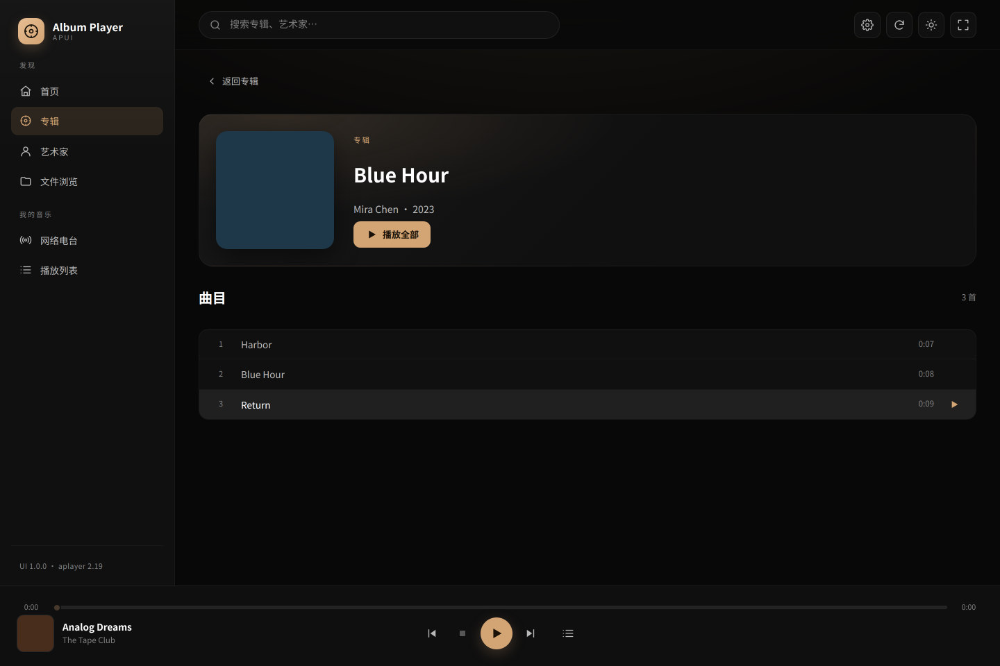
| 先看 | 正常表现 | 不正常时 |
|---|---|---|
| 播放条 | 暂停图标、进度时间前进、格式徽章 | 按钮仍显示播放、时间停在 0：命令没有真正开始 |
| 设置 → 状态 | “正在播放”为“是”，播放文件非空 | 检查 aplayer 输出设备、声卡与格式支持 |
| 音量与设备 | 音量设置与功放/耳机状态正常 | APUI 不处理音频；检查 aplayer 配置与下游设备 |
听感风险：APUI 不提供额外的软件音量或限幅。切换 DSD/DoP、声卡或陌生电台前，请先关闭功放或把下游音量降到最低；确认格式与设备后再逐步开声。
APUI 的界面分四层：左侧导航、顶部工具栏、内容区和底部播放条。桌面和手机使用同一套状态，只是排布不同。
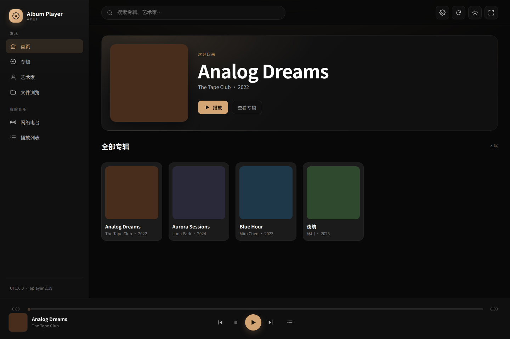
“发现”下有首页、专辑、艺术家、文件浏览；“我的音乐”下有网络电台、播放列表。这里没有“系统”或“关于”分栏：设置入口在右上角齿轮，关于内容在设置 → 关于。
| 控件 | 作用 |
|---|---|
| 搜索框 | 按专辑名、艺术家、年份过滤；在其他页面输入会自动跳到“专辑”。 |
| 齿轮 | 进入设置。手机端也在右上角保留。 |
| 刷新 | 重新读取当前曲库/播放状态；根目录或文件变化后使用。 |
| 太阳/月亮 | 深色与浅色主题切换；偏好保存在本机浏览器。 |
| 全屏 | 浏览器全屏；手机端一般隐藏。进入全屏正在播放请点击播放条封面或标题。 |
从左到右：封面与曲名（点击打开全屏正在播放）、上一首、停止、播放/暂停、下一首、当前播放队列、音量（仅当 aplayer 启用音量）。上方是进度条与左右时间。
PlayingLen=0 时可能保持 0，这是接口特性，不一定是故障。volume_enabled 开启时显示；没有滑块不代表播放失败。全屏正在播放：点击播放条左侧封面或曲名打开，按顶部向下箭头或再次点击关闭。全屏页只放大展示正在播放的信息和控制，不改变音频链路。
首页顶部是“当前/上次专辑”Hero，适合继续上次的收听；下面“全部专辑”展示根目录曲库的全部专辑。点击卡片打开专辑，悬停卡片可以快速播放。Hero 的“播放”按钮会从该专辑第一首开始；如果它正是当前播放的专辑，则按钮变为暂停/继续。
“艺术家”按 aplayer 的 AuthorList 聚合。点击艺术家进入其专辑列表，再打开具体专辑。没有艺术家头像时使用首字母/渐变占位；同一个艺术家名称的写法不同，会被视为不同条目。
搜索是浏览器端的即时过滤，适合在已经载入的曲库中快速找专辑。清空搜索框恢复全部结果。库很大时，第一次载入会花一些时间读取专辑和封面；如果页面一直为空，先看下一章的“首页没有专辑”。
队列视图只展示当前正在播放的专辑，不再把整个曲库的其他专辑列出来。它回答“这张专辑接下来放什么”，而不是复制一份完整媒体库。
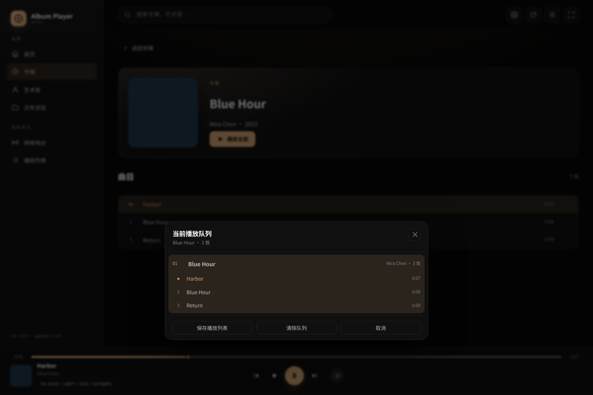
队列内容随当前播放专辑变化。播放另一张专辑后，队列自动切换为新专辑；不会继续列出上一张专辑或整个曲库。这样可以避免把“播放历史”误当成“当前队列”。
底层仍然是 aplayer 的当前播放列表，但 APUI 只呈现当前专辑的曲目视图；切歌、暂停、继续不会清空当前专辑。
SavePlaylist，保存当前 aplayer 播放列表为 .ap2；随后可在“播放列表”页看到。首页与队列的关系：回到首页会重新载入根目录曲库；播放中的专辑仍可继续。停止播放后再回到首页，APUI 会恢复根目录曲库视图。
限制：aplayer 没有队列重排/删除接口，APUI 不提供拖动排序；清除队列是停止播放并清空当前队列视图，不改动曲库文件。
点击左侧“网络电台”会直接进入电台模式，不需要再点“进入电台模式”。电台分类和本地专辑使用两套独立数据，不会把本地专辑混进电台页。
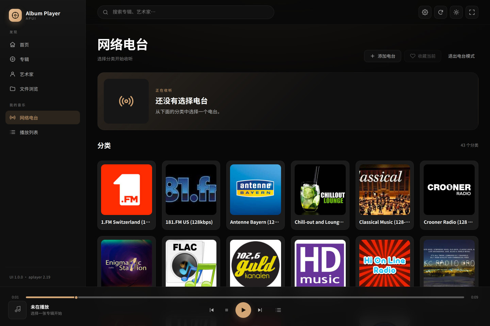
看不到分类或一直显示正在进入：先确认 aplayer 正在运行且网络可用，再点页面上的“重试”；仍失败时退出 APUI 页面重新打开，或在 aplayer 侧确认广播目录存在。电台目录更新会联网并修改本地目录，属于需要确认的操作。
这两个入口经常被混用：播放列表是 aplayer 保存的“歌单文件”，文件浏览是浏览服务器目录。前者用于收藏一组曲目，后者用于把某个目录载入当前列表。
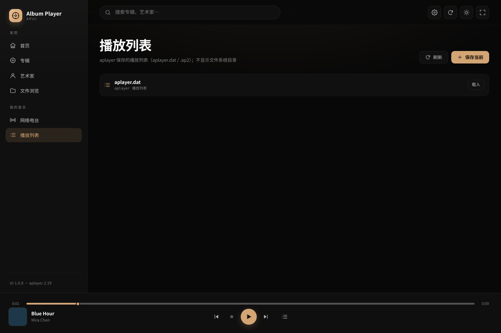
aplayer.dat 与 .ap2；不展示文件系统目录。“文件浏览”展示 aplayer 的 Drives 目录树。点击目录行可以展开/折叠；选择目录后载入，会把该目录下的音乐作为当前播放列表。展开/折叠是 aplayer 的切换语义，不是浏览器的树控件。
只载入你认识的目录。文件浏览能显示 aplayer 可访问的目录；误载系统目录会把无关文件当成媒体库。它也不会复制、移动或删除文件。载入前确认路径，并在设置里保留正确的音乐根目录作为首页来源。
| 问题 | 播放列表 | 文件浏览 |
|---|---|---|
| 数据来源 | aplayer 保存的列表文件 | aplayer 可见的目录树 |
| 典型用途 | 收藏一组曲目、恢复歌单 | 临时载入某张专辑/目录 |
| 是否复制文件 | 否 | 否 |
| 是否出现在右侧导航 | 是（我的音乐） | 是（发现） |
设置页把 aplayer 的配置按官方习惯分成 7 个主分页，并中文化了常用字段。大多数默认值不需要动；只改你理解的项，并先备份配置。
| 分页 | 内容 | 子分页 |
|---|---|---|
| 常规 | 封面目录、根目录、曲间静音、16/24 bit、播放模式、预载缓冲、Gapless、音量、自动下一专辑、cue/tags、ALSA 周期/缓冲 | 媒体库与输出 / 播放 / 音量 / 媒体库选项 / ALSA |
| 解码器 | DSD 输出/上限、PCM 采样率与音量、DVD-A、电台目录与网络参数 | DSD / DVD-A / 电台 |
| DSP | 多声道转换、声道交换、相位、PCM→DSD、重采样、卷积器 | 转换器 / 重采样器 / 卷积器 |
| 系统 | 进程优先级、Nice、内存锁定、核心选择 | — |
| 状态 | 只读运行状态、输出格式、正在播放文件 | — |
| 声卡 | asound.conf、可用声卡、当前声卡、Scream 桥 | — |
| 关于 | APUI/aplayer 版本、许可证、官方与仓库链接、Credits | — |
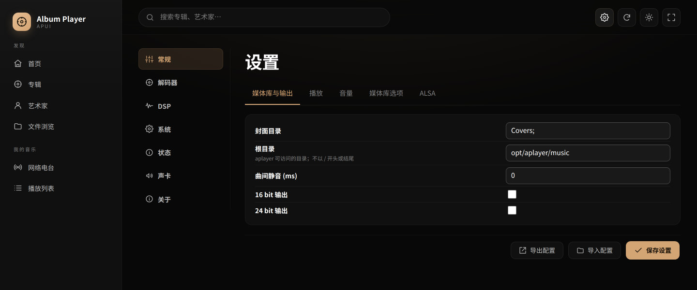
声卡页按“关于”页的分布拆为两张卡片；选择声卡下拉框与“应用”按钮在同一行。
| 字段 | 用途 | 建议 |
|---|---|---|
| 根目录 | 首页曲库的根 | 不带首尾斜杠，如 mnt/samba；保存后刷新 |
| 封面目录 | aplayer 查找封面的位置 | 保持默认或与媒体库结构一致 |
| 预载缓冲 / Gapless | 播放缓冲与无缝衔接 | 没有特殊需求保持默认；改动后重新播放验证 |
| 启用音量控制 | 是否显示播放条音量 | 关闭时 APUI 不显示音量滑块，这是正常现象 |
| ALSA 周期 / 缓冲 | 输出延迟与稳定性 | 只在理解声卡链路时修改；异常先恢复默认 |
| DSD 输出 / 上限 | 原生 DSD、DoP、PCM 转换 | 按 DAC/目标能力选择；不确定时用默认或 auto |
| 重采样器 | SoXR 目标采样率/质量 | Bit-Perfect 场景通常不需要开启 |
| 声卡 / Scream 桥 | ALSA 设备与网络输出 | 切换声卡会改变输出链路，先降低音量 |
这三个按钮都在设置页底部，作用范围是完整配置（全部可写字段），不是当前分页。状态和关于页是只读的，因此不显示“保存设置”，但仍可导出/导入配置。
api_key/api_cx 等敏感字段。config.dat。不要提交空白配置。aplayer 的保存接口是整包覆盖；只改一项也要保证其他字段是当前有效值。不要在配置未完整载入时刷新/重复提交，不要用来路不明的 JSON 覆盖生产设备。保存只代表配置写入成功，底层声卡/DSD 是否立即生效由 aplayer 决定；切换后请重新播放或按现场规范重启服务验证。
“状态”是只读页面：可以核对 aplayer 是否 root、进程优先级、16/24/32 bit 支持、原生 DSD、正在播放文件、输出和 ALSA 周期/缓冲。它适合在“没声音”时先判断是环境问题还是控制问题；“关于”展示版本、许可证、官方/仓库链接和 Credits，没有单独的 About 页面。
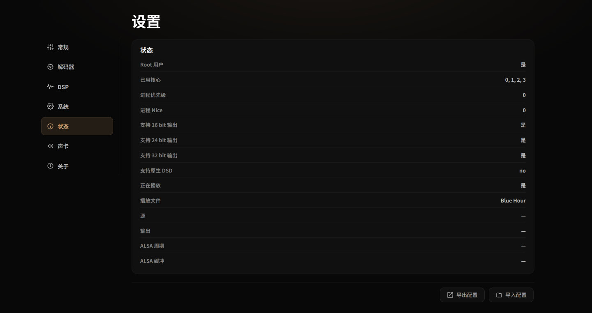
| 字段 | 含义 / 排查用途 |
|---|---|
| Root 用户 | aplayer 进程是否以 root 运行；与现场部署方式有关，不是 APUI 的权限设置。 |
| 已用核心 / 优先级 / Nice | CPU 亲和与调度；只在明确知道实时性需求时修改，改后对比播放稳定性。 |
| 支持 16/24/32 bit、原生 DSD | 设备能力摘要；“no”表示当前链路没有声明该能力，不代表文件一定不能转成 PCM 播放。 |
| 正在播放 / 播放文件 | 最直接的“有没有开始播放”证据；文件为空时不要先怀疑进度条。 |
| 源 / 输出 | 当前输入来源与输出后端；排查“有进度但没声音”时，先看输出是否为空/错误。 |
| ALSA 周期 / 缓冲 | 输出缓冲参数；与“常规”里的值对照，异常时恢复现场基线。 |
手机端不是缩小的桌面：底部导航替代侧栏，播放条压缩，队列变成底部弹层，设置页会隐藏左侧分页导航并把表单改成单列。
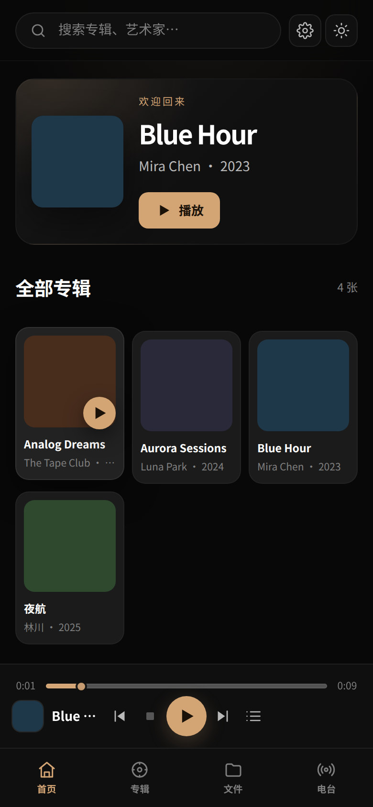
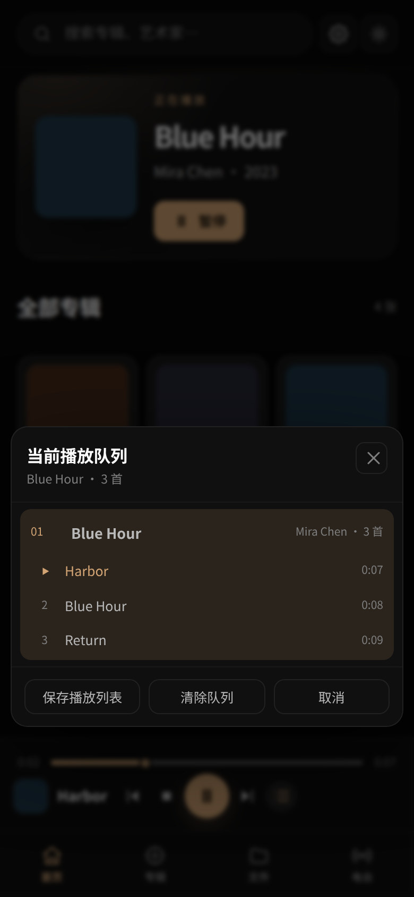
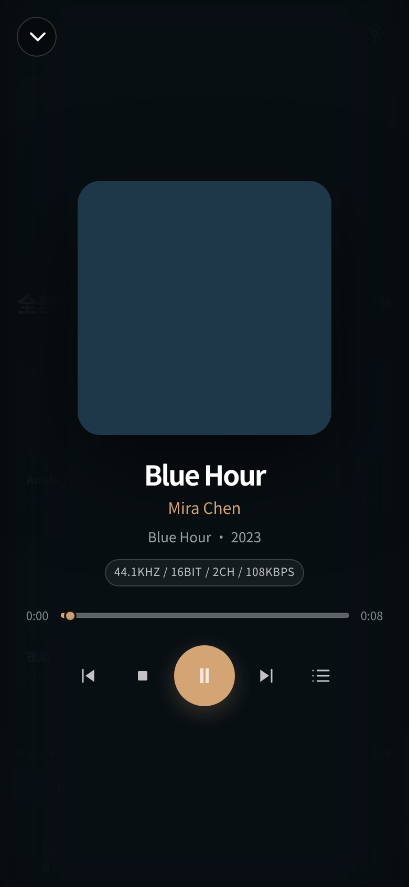
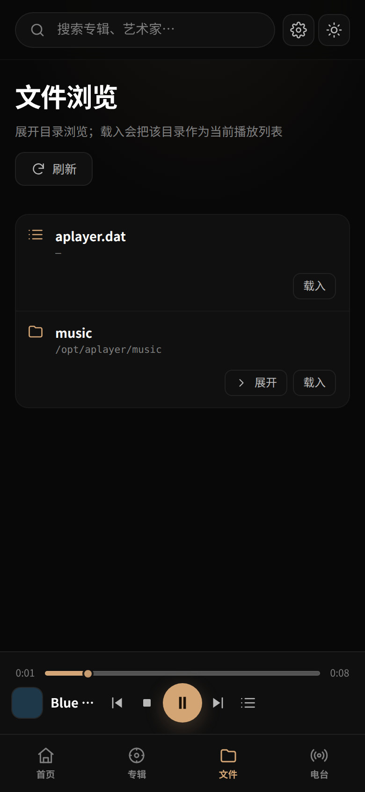
本项目主要在 Chromium（桌面/Android）和移动视口模拟下验收；Firefox、Safari 和 iOS/Android 真机的逐项验收仍在后续清单中。遇到布局问题，先强制刷新、更新到 1.0.0，并提供浏览器与系统版本、截图和页面地址。
排障顺序：先确认页面能打开，再确认曲库/当前列表，再确认 aplayer 输出；不要把“音频设备问题”误判成 UI 问题。
| 现象 | 先看什么 | 常见原因与处理 |
|---|---|---|
| 页面打不开 | 7778 是否监听；aplayer 是否运行；浏览器地址是否为根路径 | 先让 aplayer 正常；不要访问 /?unknown 这类查询，aplayer 会返回 Command Not Found。检查防火墙/端口。 |
| 页面是旧版，或侧栏版本不对 | 侧栏版本号；aplayer.html 引用的 ui/app-*.js | 强制刷新；确认安装脚本已替换入口；重新安装同版本发布包。 |
| 首页没有专辑 | 设置 → 常规 → 根目录；文件浏览 | 根目录为空/写法不对（不要首尾斜杠）；目录对 aplayer 不可见；保存后刷新。 |
| 首页只有一张专辑/上次的列表 | 版本是否为 1.0.0；根目录是否配置 | 1.0.0 会回到根目录；旧版请升级。根目录为空时不会猜库，需先配置。 |
| 点播放没声音 | 播放条时间、格式；设置 → 状态；aplayer 日志 | APUI 只发命令；检查 aplayer 输出设备、音量、格式支持、另一台机器是否占用设备。 |
| 进度条一直是 0 | 是否电台/流；ProgressVisible/PlayingLen | 流媒体没有总时长时正常；本地文件仍为 0 则查 aplayer 状态或格式。 |
| 音量滑块不见了 | 设置 → 音量控制 | aplayer 未启用音量控制时按设计隐藏；不是 UI 缺失。 |
| 设置保存后没变化 | Toast 是否“已保存”；设置 → 状态 | 确认保存的是完整配置；底层声卡/DSD 可能需要重新播放或按 aplayer 规范重启后生效。 |
| 设置保存失败 | 错误提示；根目录/封面；config.dat 备份 | 字段校验失败或 aplayer 无法写入；恢复备份后再改，逐项提交。 |
| 导入配置后不对 | 导入确认框；JSON 来源；备份 | 导入覆盖可写字段；用错文件就回滚 config.dat，不要在生产库上试未知配置。 |
| 电台分类为空/卡住 | 网络；aplayer 电台目录；页面重试 | 退出再进入；更新/替换目录需确认；检查 aplayer 的电台文件与网络。 |
| 队列里有其他专辑 | 当前播放的专辑 | 1.0.0 只显示当前专辑；点击播放新专辑后队列会切换。 |
| 保存播放列表失败 | 名称为空？aplayer 目录权限/磁盘 | 换名称；确认 aplayer 可写播放列表目录；保存的是当前列表，不是单曲。 |
| 手机布局溢出/按钮被挡 | 浏览器缩放、横竖屏、版本 | 强制刷新并升级 1.0.0；仍异常请提供设备、浏览器版本和截图。 |
| 升级 aplayer 后界面异常 | aplayer 版本；接口是否变化 | APUI 只适配 2.19 接口；升级前回归，必要时回滚 aplayer 或安装匹配版本。 |
如果问题只在某个浏览器/设备出现，先在另一个浏览器复现；只在一个浏览器出现时，优先检查缓存、扩展和缩放，而不是改 aplayer 配置。
APUI 的设置保存会写 aplayer 的 config.dat；aplayer 也可能在运行、切换声卡或更新目录时改写配置/列表。修改前至少备份：
/opt/aplayer/config.dat（以及现场使用的其它配置）/opt/aplayer/aplayer.dat、用户 .ap2 播放列表/opt/aplayer/Radio/ 与电台目录（如使用）install.sh / uninstall.sh；安装脚本自带备份。kill -9 处理音频进程。aplayer.html 的资源名；回滚时使用对应时间戳的备份目录。# 页面入口是否正常 curl -fsS http://127.0.0.1:7778/ | head # aplayer 当前状态（可直接看到 Playing/Album/Song/RadioMode） curl -s 'http://127.0.0.1:7778/?State' # aplayer 服务状态（按现场 init 系统选择） systemctl status aplayer # rc-service aplayer status
日志位置由 aplayer 决定；常见为 /opt/aplayer/aplayer.log。对外求助时请提供：APUI 版本、aplayer 版本、浏览器/系统、复现步骤、截图/控制台错误、?State 输出和最近日志的脱敏片段。
| 项目 | 内容 |
|---|---|
| APUI 版本 | 1.0.0（2026-10-29） |
| 兼容 | Album Player for Linux 2.19；Web 端口 7778 |
| 发布包 | apui-web-1.0.0.tar.gz（约 47 KB） |
| 入口资源 | ui/app-CiqgQiA2-.js / ui/app-BbGewegi.css |
| SHA256 | 8a6c008361cebc039ffffcca284c9265ba6bf231714b8126c1422d57df447929 |
| 仓库 | github.com/harmonyosnews/album-player-ui |
| 发布页 | releases/tag/v1.0.0 |
| 许可证 | Apache License 2.0；版权人 harmonyosnews |
./install.sh /opt/aplayer。./uninstall.sh /opt/aplayer-ui-backup-<时间戳> /opt/aplayer 回滚。?State 输出、aplayer 服务状态、最近日志的脱敏片段；请不要在公开 Issue 中粘贴口令、私钥、带内网地址/主机名的完整日志，或未脱敏的配置导出。APUI 是独立前端项目，不是 Album Player 官方支持渠道；aplayer 二进制/许可问题请联系其相应权利人。
APUI 版本（侧栏）： aplayer 版本： 浏览器 / 操作系统： 页面或 hash 路由： 复现步骤： 期望结果： 实际结果： Console 错误（脱敏）： ?State（脱敏）： 服务状态 / 最近日志（脱敏）：
提交前请删除内网地址、主机名、账号、令牌、音乐文件名中的隐私信息；截图里的播放器 IP 和曲库名也建议打码。
本手册是使用说明，不构成法律意见，也不替代仓库根目录的 LICENSE。完整文本以发布包/仓库中的文件为准：
| 文件 | 内容 |
|---|---|
LICENSE | Apache License 2.0 全文；APUI 源代码与构建产物的许可。 |
NOTICE | 版权归属、第三方边界与归属说明。 |
USER-AGREEMENT.md | 用户协议：可信网络、配置备份、内容合规、责任限制。 |
DISCLAIMER.md | 免责声明：音频设备/听力/配置/第三方内容风险。 |
THIRD-PARTY-NOTICES.md | 第三方组件、构建工具与发布边界。 |
config.dat，不要提交空白或来源不明的配置。APUI 发布包不包含 aplayer 二进制、TinyLMS 代码/资源或第三方封面/电台图片。再分发 APUI 时请保留 LICENSE、NOTICE 与相关法律文件，并遵守 Apache 2.0 的修改标注与通知义务。正式商用、再分发或高风险场景请自行取得法律意见。
首次试听、切换 DSD/DoP、声卡或陌生电台前，先关闭功放或把下游音量降到最低。
只在可信局域网使用 7778；不要把无鉴权接口直接暴露到公网。
修改设置、升级、删除播放列表或更新电台目录前，备份 config.dat、aplayer.dat 与 Radio/。
保存/导入配置前确认当前配置已完整载入；不要用来源不明的 JSON 覆盖生产设备。
需要重启 aplayer 时使用 systemd/OpenRC 的正常 stop/restart，不要用 kill -9 处理音频进程。
升级或回滚后核对侧栏版本、aplayer.html 的资源名，并强刷浏览器。
对外分享截图/日志前脱敏 IP、主机名、账号、令牌与曲库文件名。
完整协议与免责声明位于仓库根目录：USER-AGREEMENT.md、DISCLAIMER.md、THIRD-PARTY-NOTICES.md。发布包内也包含 LICENSE 与 NOTICE；如本手册摘要与正式文本不一致，以正式文本为准。
以下为仓库根目录 LICENSE 原文，随本手册一并提供。若译文或摘要与许可证冲突，以许可证原文为准。
{{LICENSE}}
以下为仓库根目录 NOTICE 原文。更完整的构建工具、字体/图标与第三方组件说明见 THIRD-PARTY-NOTICES.md。
{{NOTICE}}